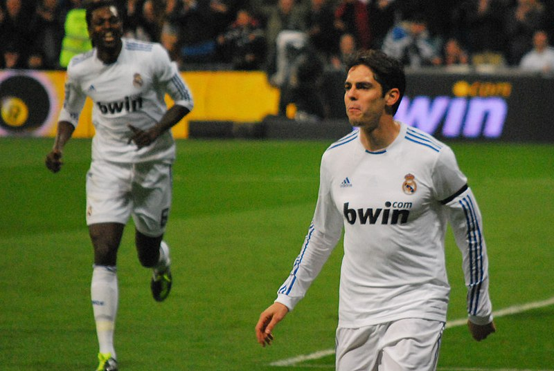

This is a list of my favourite footballers to ever play the game of football
My Top 5 Footballers
1.

~Germany's Mesut Ozil during UEFA Euro 2012 qualifier Germany v Kazakhstan in Kaiserslautern
Mesut Ozil
"If you're not excited about watching Ozil, you don't love football"
-Arsene Wenger
Mesut Ozil was a midfielder who played for many big teams such as Real Madrid and Arsenal. He was renowned for his world-class playmaking skills which constisted of creative skils and passes.
2.
~Kaká after scoring a goal against Real Sociedad in 2011
Ricardo Kaka
"In my whole life, Jesus is in first place. That's why I put that inside my cleats, Jesus in first place, because that is how I think."
-Ricardo Kaka
Kaka was one of a kind player possesing incredbile speed and close control dribbling skills, usually its one or the other however Kaka used both to their maximum potential.
3.

~Andrés Iniesta and Claudio Marchisio at Euro 2012 final Spain-Italy
Andres Iniesta
"Iniesta is Harry Potter, he makes magic, and it's hard to find another."
-Luis Enrique
Coach of FC Barcalona
Andres Iniesta was considered one of the best midfielders to ever step onto the football pitch and has a long record of trophies, including the 2010 World Cup and Champions League.
4.
~Brighton and Hove Albion vs RCD Espanyol preseason game on 30 July 2022
Kaoru Mitoma
"Your growth as a footballer stops the moment you stop believing in yourself"
-Kaoru Mitoma
Kaoru Mitoma is the youngest player of everyone of the list and is currently playing in the Premier League for Brighton Hove and Albion. He is a japanese footballer and also plays for the national team.
5.

~Croatia vs. Portugal, 10th June 2013
Cristiano Ronaldo
"If you don't believe you are the best, then you will never achieve what you are capable of."
-Cristiano Ronaldo
Cristiano Ronaldo is considered one of the best if not the best player in the entire world and history of football.